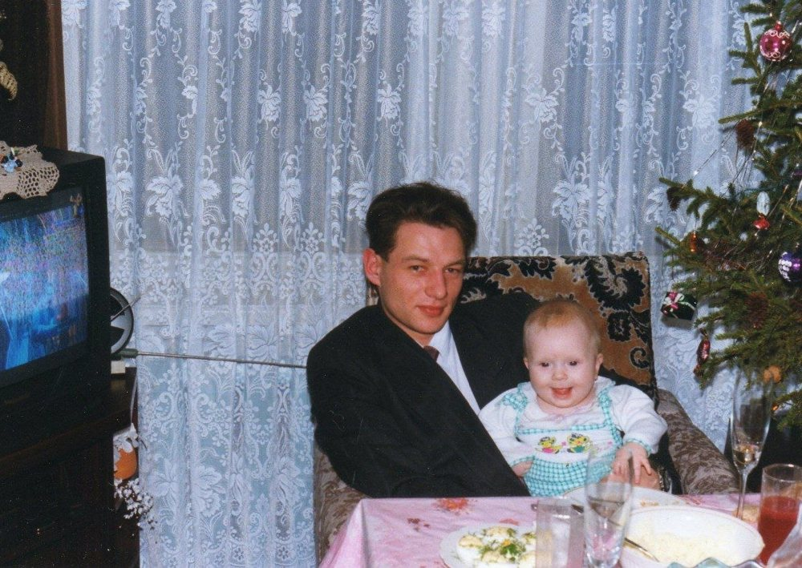
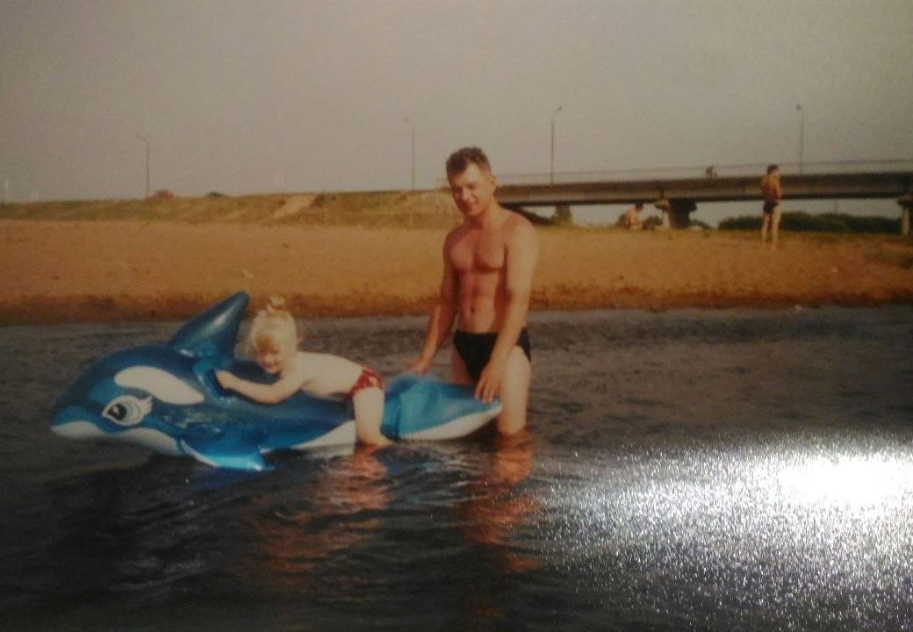
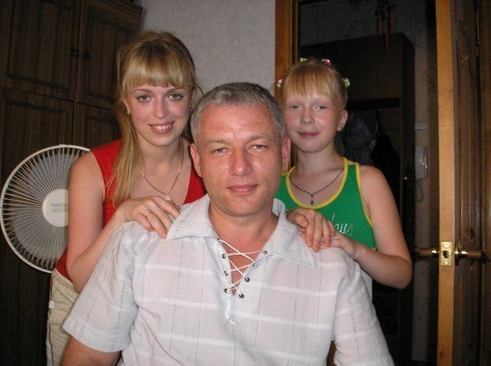
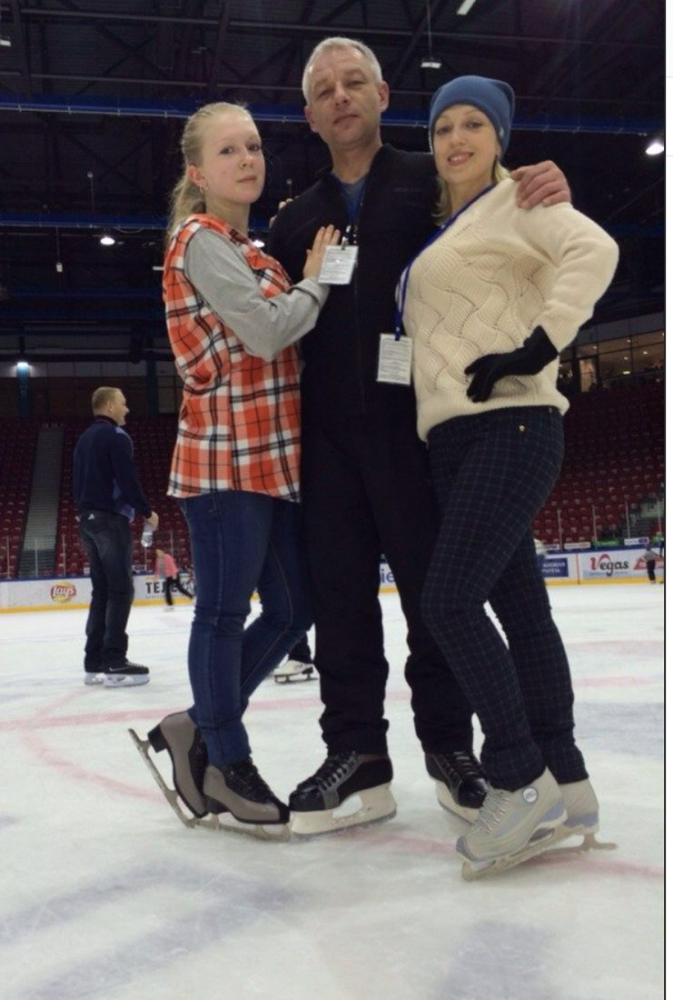
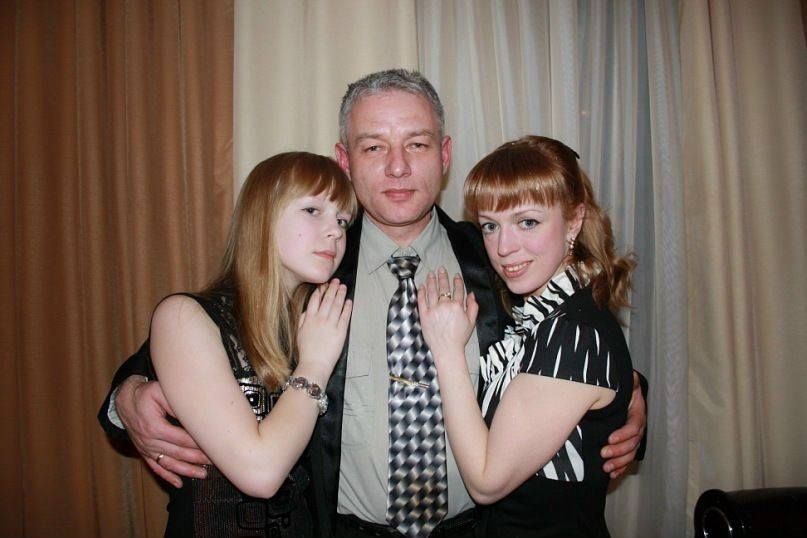
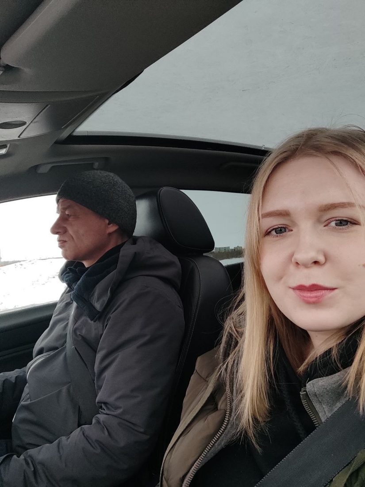
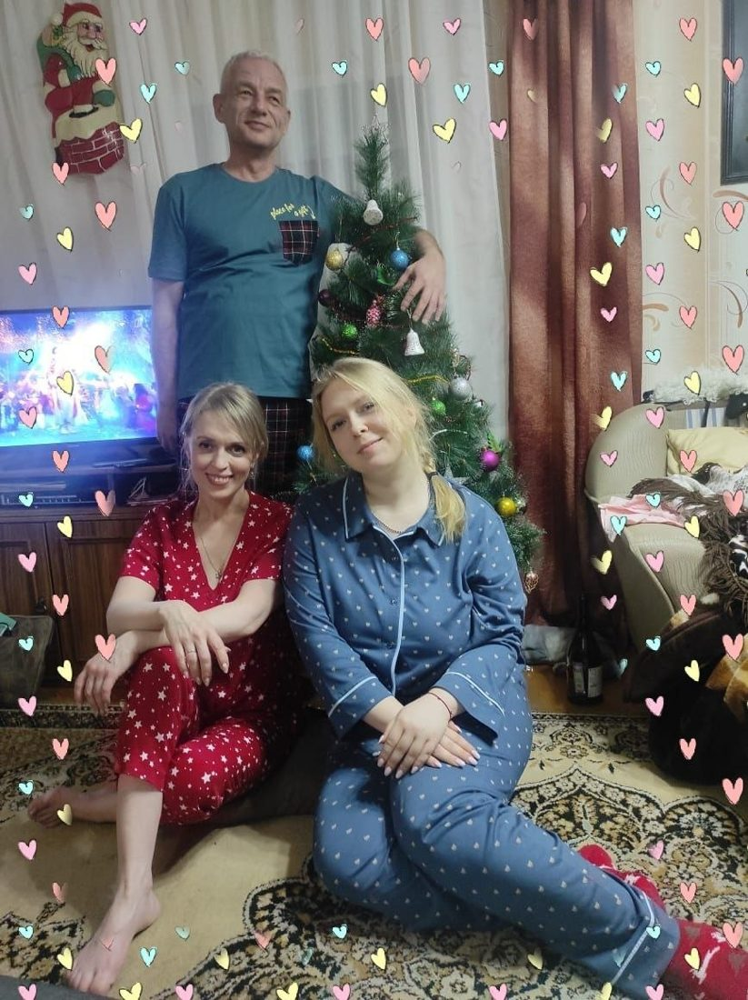
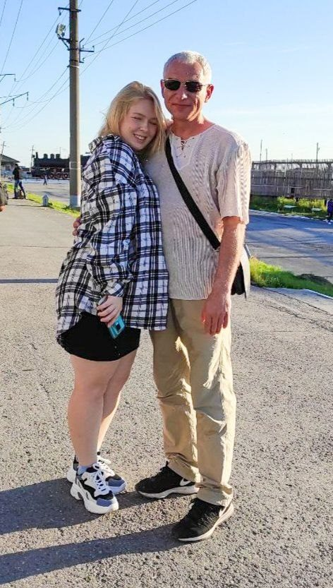
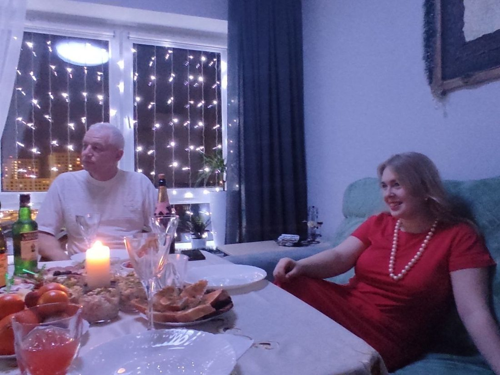

Нажмите на страницу или смахните, чтобы перелистнуть. У каждой истории есть кнопка «послушать».

от Настёны ♥
Пап,
это маленький альбом ко Дню отца. Здесь истории, которые я помню всю жизнь, и фотографии, где мы вместе.
У каждой истории есть кнопка «послушать» - это я сама их тебе рассказываю.
Твоя Настёна

Я на дельфине, ещё не умею плавать
Папа учил меня кататься на велосипеде, когда мы были в Белоруссии. Учил старательно и спокойно. Помню, как у меня наконец начало получаться: я ехала с горки, папа что-то крикнул мне вслед, я обернулась - и то ли налетела на камень, то ли не успела затормозить. Перелетела через руль и проехалась лбом по асфальту. А потом увидела, что у папы тоже кровь на подбородке. До сих пор не знаю, откуда она взялась, но мне кажется, тогда папа волновался даже сильнее, чем я.
Ещё папа учил меня плавать. Не знаю, откуда у человека столько терпения. Плавать я научилась только к шестнадцати годам - когда папа решил, что мне пора в бассейн, и начал брать меня с собой на свои тренировки.
А кататься на лыжах папа научил меня, когда я была уже взрослой. В Камне-на-Оби мы вместе ходили на лыжню, и он терпеливо объяснял, как правильно ехать. До этого я лыжи ненавидела, а тогда мне вдруг понравилось.
Пап, спасибо тебе за твоё терпение.

Мы втроём
В детстве я очень многого боялась, как и все дети: темноты, монстров, злых людей - чего я только не боялась. И однажды мама сказала мне: «Знаешь, у нас есть папа. Когда папа дома, можно ничего не бояться - он нас от всего защитит. Папа самый сильный, папа надёжный, и с папой нам ничего не страшно».
С тех пор мне никогда не было страшно, если папа был дома. Или если я просто знала, что он где-то рядом.

На катке, за папу держимся
Помню, как однажды несла маме флешку, а на меня накричал дежурный по части. Я шла домой и ревела. Папа встретил меня в дверях и сразу начал спрашивать, что случилось. Я всё рассказала, а он отправил меня есть мороженое и успокаиваться - а сам позвонил тому дежурному и как следует на него наорал.
Тогда я впервые по-настоящему поняла, каково это, когда за тебя заступаются. Когда тебя безусловно любит папа. Мне было так приятно.

Отмечаем Новый год
Когда я не понимала математику или физику, я всегда шла к папе. Он брал мои учебники, читал, наверное, вспоминал тему, сам во всём разбирался - а потом объяснял мне. Я совсем не технарь, и понимала я с большим трудом и далеко не с первого раза. Но папина выдержка и его упорство в том, чтобы объяснить мне то, что до меня никак не доходило, до сих пор вызывают у меня огромную благодарность и восхищение.
Пап, это благодаря тебе я хорошо закончила школу.

Когда папа за рулём, ничего не страшно
Музыкальную школу я ненавидела. В обычной школе у меня никогда не было проблем, а вот в музыкалку однажды вызвали родителей. Забирал меня тогда папа, и я сказала ему, что ему нужно сходить к учительнице. Думала, будет ругаться. А он вернулся, сел в машину и смеялся: «Ты чего там ничего не учишь?» - «Да задолбала меня эта пьеса, она дурацкая». - «Ну, Настя, ну надо выучить». - «Ну ладно, выучу».
Я её выучила. И потом заняла с ней первое место на конкурсе.
А ещё, когда папа забирал меня из музыкалки, мы всегда включали «Короля и Шута», и я во всё горло орала эти песни. Одно из самых любимых моих детских воспоминаний: Мурманск, уже тёплый май, папа забирает меня из музыкалки, я открываю окно, мы едем по Кильдинке, тёплый ветер треплет волосы - и мы вдвоём орём «Куклу колдуна».

Новый год в пижамах
Помню, как в детстве мы приехали в отпуск в Тулу и начали собирать пазлы - сначала маленькие коробочки. Нас так затянуло, что я по нескольку раз в день бегала до ларька за новыми: побольше, ещё побольше. По-моему, мы весь тот отпуск собирали пазлы. Это было такое наше семейное занятие, и это было очень здорово.
В детстве я часто приходила посмотреть, как папа играет в свои игры на компьютере. Я ничего не понимала - мне просто нравилось сидеть рядом. Наверное, это был мой способ быть ближе. А когда мне было двенадцать, в одном из отпусков в Туле папа научил меня играть в «Героев». Мы обсуждали игру, папа объяснял, как выстраивать стратегию, как накопить вампиров и воевать только ими.
Ещё помню, как совсем маленькой сидела у папы на плечах в Мирском замке в Беларуси, и мы смотрели реконструкцию какого-то сражения. А когда папа смотрел фильмы, я любила забираться к нему на спину и делать массаж.
Когда мне было семь, папа уехал в Чечню - по-моему, на полгода. Я тогда, конечно, почти ничего не понимала, но очень сильно скучала. И как же я радовалась, когда он вернулся и привёз мне мягкого игрушечного енота, который смешно ржал.

Папа провожает на поезд
Когда мне нужно было решить, поступать в Питер или ехать с Ильёй в Тюмень, я совсем не понимала, как будет правильно, чего я хочу и что мне делать. Я спрашивала совета у всех, у кого только можно, - а те, у кого не спрашивала, почему-то давали советы сами. Понятнее от этого не становилось. Все рассуждали очень рационально: как лучше, как правильнее.
И только папа спросил: «А что сделает тебя счастливой? Чего ты хочешь сама?»
Для меня это стало открытием на всю жизнь. Важно, чего хочу я сама. И вообще важно задавать себе этот вопрос. До этого, кажется, никто в таких ситуациях не спрашивал, чего хочу я.

Ждём курантов
С папой классно пить пиво, болтать и смотреть фильмы.
Помню, как однажды в апреле приехала в Воркуту присмотреть за собаками - тогда то мама, то папа по очереди лежали в госпитале. Я как-то посоветовала папе один фильм. И вот то ли я проснулась, то ли просто услышала, что он его смотрит, - зашла, и мы досматривали вместе. Мне было так приятно, что папе понравилось то, что я посоветовала.
А потом папа посоветовал фильм мне. Мы купили пиво и сухарики, смотрели «Туриста» с Джонни Деппом и Анджелиной Джоли и всё обсуждали. Это было очень круто и очень тепло.
Я часто болела. Знаю, что мама очень волновалась, и знаю, что папа всегда её поддерживал - хотя сам переживал ничуть не меньше.
Помню, как у меня был пиелонефрит и папа повёз меня в город на УЗИ. Живот болел невероятно, мне было по-настоящему плохо. Я растянулась на заднем сиденье и буквально стонала. А папа вёл машину и - наверное, в ужасно неудобной позе - протягивал руку назад, чтобы держать меня за руку всю дорогу.
А когда у меня был язвенный колит и меня выписали из больницы, мамы дома не было - то ли она была на сутках, то ли куда-то уехала, уже не помню. И папа встретил меня словами: «Я там тебе суп сварил, иди попробуй». Это был рисовый суп, очень вкусный. Папа потом почему-то отрицал и говорил, что не было такого. Но я-то помню.
Я знаю, что папа всегда находил деньги, время и возможность, чтобы купить мне лекарства, отвезти на процедуры, оплатить врачей. Чтобы я ни в чём не нуждалась.
Когда мне исполнялось четырнадцать, вам несколько месяцев не платили зарплату. А я тогда очень увлеклась фотографией и мечтала о настоящей профессиональной зеркалке. И ещё о собаке. Мы договорились, что фотоаппарат будет подарком сразу на несколько праздников и что купите вы его, когда выплатят зарплату, - может, и не прямо на день рождения.
Но ровно в день рождения меня ждал фотоаппарат. И ещё - собака.
Я до сих пор не знаю, как вы это сделали. Наверное, влезли в долги. Но я знаю, что тогда я чувствовала себя по-настоящему счастливой. И я вам очень благодарна.
Пап,
я очень тебя люблю. Я очень благодарна, что ты у меня есть. И очень хочу, чтобы ты был здоров и счастлив.
Спасибо, что ты сделал моё детство спокойным и счастливым. Спасибо, что ты рядом - и в трудные, и в счастливые моменты. Спасибо, что ты всегда на моей стороне. И за то, что я знаю: ты всегда на моей стороне.
Твоя Настёна
С Днём отца, пап!октябрь 2026
С Днём отца, пап ♡